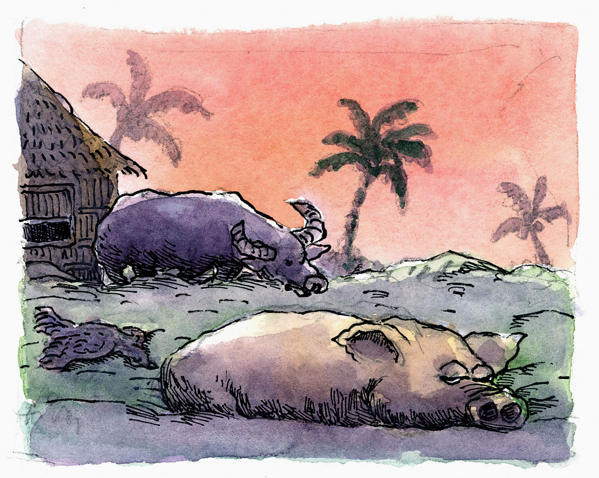
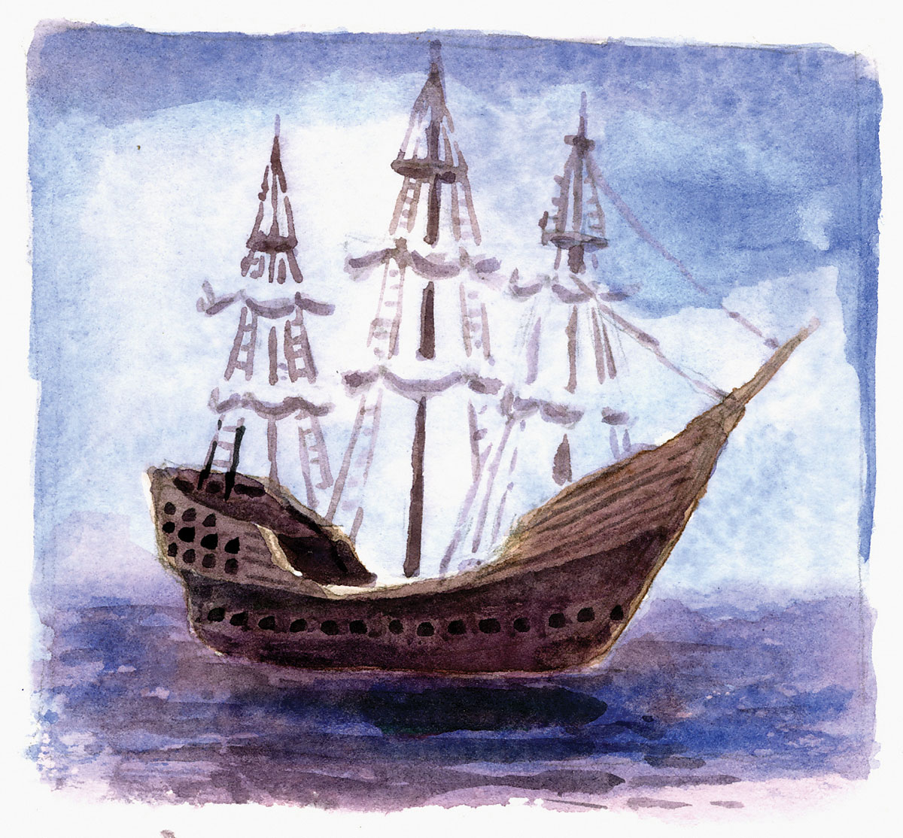

Ang Kapitan ni Maria Cacao
Si Ingko Candido nagpuyo sa sitio Ilaya, Cawayan, Dalaguete, lalawigan sa Sugbo. Nabaniog siya sa maong balangay nga tambalan ug may gahom sa pakighinabi sa mga dili-ingon-nato. Tungod kini sa gihabak niyang kuwentas nga bronse nga may hugis sa usa ka agilang nagdupa sulod sa usa ka lingin nga nagliyong sa agila.
Ang kuwentas hinatag sa usa ka tiguwang nga lalake nga taga bukid, nga iyang gipasalo sa iyang balon usa ka udto niana, dihang nangguna siya sa iyang baol didto sa bungtod sa Dao. Taas og buhok nga ubanon ang tiguwang. Taas ug puti pod ang iyang bungot. Abuhon ang iyang pamiste. Nagkawo siyag buli nga nagkagidlay.
Human nila og pangaon nagpasalamat ang tiguwang ug gihatag kang Ingko Candido ang kuwentas.
“Magsilbi ra kana kanimo, labi nag buot kang makigsulti sa dili makita nga mga linalang,” maoy sulti sa tiguwang. Human nipadayon kini pagtungas sa bukid. Gikan niadto wala na gyud igkakita ni Ingko Candido pag-usab ang tiguwang.
Usa ka higayon may nahitabo nga dautan sa balangay. Nangamatay ang kahayupan. Giatay ang mga manok, baboy, baka, kabaw, kanding ug ubang mga hayop nga binuhi sa mga molupyo. Nanagmulo ug nagpanakla sa ilang mga dila ang mga silingan ni Ingko Candido sa gidangatan sa ilang mga hayupan. Apan nahibulong sila kay bisan usa walay namatay sa tulo ka buok baboy ni Ingko Candido. Sa iyang mga manok, duha ka bag-ong tali day gidungoy.
“Ngano, Ingko, nga wa may namatay sa imong mga baboy, ug duha ka bag-ong tali lang ang gidungoy sa imong mga manok?” Pangutana sa usa ka silingan.
“Gilalis ko si Kapitan Balgos,” tubag ni Ingko Candido.
“Kinsa siya, Ingko?” sukna sa silingan.
“Siya ang kapitan sa dakong barko ni Maria Cacao. Kagabii nilarga na sila padulong sa Amerika kay dunay gipanghatod nga mga kakaw, asero ug bulawan. Giaway ko siya kay gusto niyang dad-on ang tulo ko ka baboy ug ang mga manok, kay sugo ni Maria Cacao aron daghan ang ilang mabalon sa biyahe kay layo ra ba tong Amerika,” saysay ni Ingko Candido.
“Maayo kay nagpakita siya nimo nga engkanto man siya.”
“Tungod kana sa gahom ning akong kuwentas. Apan wala ko kaklaro sa iyang nawong kay nagdagtom da man siya sa akong atubangan, morag anino. Hinuon klaro ang iyang tingog nga morag gikan sa ilawom sa yuta.”
“Giunsa man nimo pagkombinsir si Kapitan Balgos aron dili dad-on ang imong mga hayupan?”
“Akong gihadlok. Giingnan nako nga kon dili siya mosugot sa akong hangyo, sultian ko ang katawhan nga sila ang nanguha sa mga binuhing hayupan sa mga tawo aron mabalon sa biyahe ni Maria Cacao. Nisumbalik si Kapitan Balgos nga dili motuo ang mga tawo kanako kay makita man sa mga tawo nga nangligdas nga wala nay kinabuhi ang ilang mga hayupan.
“Ako siyang gitubag nga motuo ang mga tawo nako tungod ning akong kuwentas. Ug gipakita ko kini kaniya. Nahasibog siya sa pagkidlap sa bronse nga nahitandangan sa silaw sa himatyong bulan. Unya ako siyang giingnan nga ako nasayod sa ilang paagi: ang mga hayop ilisan nilag balani sa saging nga sa panan-aw sa mga tawo mao ang ilang mga hayupan nga nangamatay pinaagi sa usa ka lamat.” Miigham si Ingko Candido.
“Unya, Ingko, unsay iyang hukom?”
“Nisugot siya sa akong hangyo, basta dili lang ko mosulti sa mga tawo sa akong nahibaw-an bahin kanilang mga engkanto. Wala nila dad-a ang tulo ko ka baboy, apan gipangayo ni Kapitan Balgos ang duha ka bag-ong tali nga labuyo kay humot kunong isugba sahi sa langgam.”
Sa paglabay sa mga katuigan nahibaw-an ra gihapon sa mga molupyo sa Ilaya gikan mismo ni Ingko Candido nga sa panahon nga moabot ang peste ug mangamatay ang kahayupan, gisugo na usab ni Maria Cacao si Kapitan Balgos aron pagpangalap og mga hayop nga mabalon nila sa ilang biyahe paingon sa Amerika ug Uropa aron pagtumod og kakaw, asero ug bulawan.